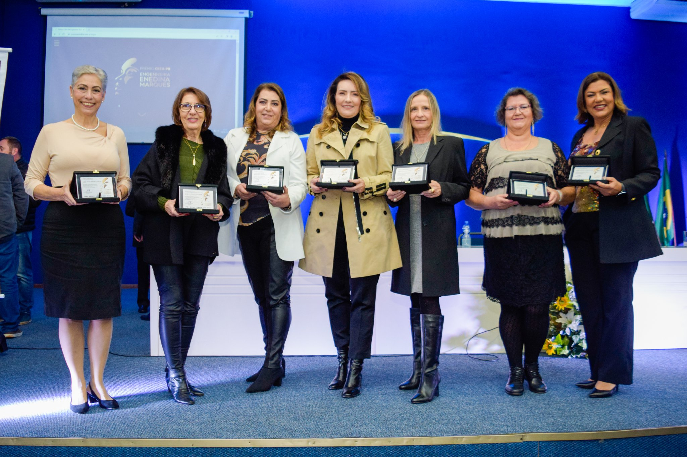

Enedina Alves Marques

Enedina Alvez nasceu em Curitiba-PR no dia 13 de janeiro de 1913, filha de Paulo Marques e Virgínia Alves Marques.
Formou-se em engenharia civil em 1945 na Universidade Federal do Paraná (UFPR), entrando para a história como a primeira mulher a se formar em engenharia no Paraná e como a primeira engenheira mulher e negra do Brasil.
Morte:
Enedina morreu no dia 20 de agosto de 1981,
em Curitiba,
com 68 anos de idade.
Sua Vida
Ela foi criada na casa da família do delegado e major Domingos Nascimento Sobrinho, para quem sua mãe trabalhava como faxineira. Enedina tinha a mesma idade da filha de Domingos e, para fazerem companhia uma a outra, matriculou-a nas mesmas escolas da filha.
Enedina Alves foi, portanto alfabetizada, nos anos de 1925 a 1926 estudou no Colégio Particular da professora Luiza Dorfmundová. No ano seguinte, ingressou na Escola Normal, onde permaneceu até 1931.
Entre 1932 e 1935, começou a trabalhar como professora no interiror do estado.
Em 1938 concluiu o curso complementar de pré-engenharia e em 1940 ingressou na Faculdade de Engenharia da Universidade do Paraná, onde formou-se em engenharia civil em 1945.
Foi no Paraná e no Brasil a primeira engenhaira mulher e negra.
Em 1946, tornou-se engenheira assistente do Departamento Estadual de Estradas de Rodagem e Obras Públicas. No ano seguinte, foi descoberto pelo governador Moisés Lupion, que o transferiu para a Secretaria Estadual de Águas e Energia Elétrica.
Em 1958, o major Domingos faleceu e a deixou como uma de suas herdeiras em seu testamento.
Escolaridade
Enedina Alves, como mencionado anteriormente, estudou nas mesmas escolas de sua amiga, então ela estudou no colégio particular da Professora Luiza Dorfmundová, e depois estudou na escola Normal.
No ano de 1938 completou o curso complementar de pré-engenharia, então ela se formou em engenharia civil em 1945 na Universidade Federal do Paraná (UFPR).

Trabalhos
Reconhecimentos
Trabalhou no Plano Hidrelétrico do Paraná e atuou no aproveitamento das águas dos rios Capivari, Cachoeira e Iguaçu. Durante a obra na Usina ficou conhecida por usar macacão e portar uma arma na cintura para se fazer respeitada. Enérgica e rigorosa, impunha-se sempre, pois, além de ser mulher trabalhando num ambiente majoritariamente ocupado por homens, e era negra.
Para muitos, a Usina Capivari-Cachoeira foi seu maior feito como engenheira. Dentre outras obras, destacam-se o Colégio Estadual do Paraná e a Casa do Estudante Universitário de Curitiba (CEU).
Sua casa, aonde passou a infância com sua mãe, foi demolida e hoje abriga o Instituto do Patrimônio Histórico e Artístico Nacional (IPHAN).
Em 1962, Enedina aposentou-se e recebeu o reconhecimento do governador Ney Braga, que reconheceu as conquistas da engenheira e lhe garantiu um salário equivalente ao de um juiz, levando seu nome a uma importante rua do bairro Cajuru, em Curituba.
Em 2000, foi imortalizada no Memorial á Mulher, localizada na capital paranaense, ao lado de outras 53 mulheres pioneiras no Brasil.
Em 2006 é fundado o Instituto de Mulheres Negras Enedina Alves Marques em Maringá-PR.
Seu impacto na sociedade
O Prêmio Crea-PR Engenheira Enedina Alves Marques, é organizado pelo Comitê Mulheres do Crea-PR.
A homenagem com o nome do Prêmio á Enedina Alves, é um reconhecimento de sua história de vida de muita luta e superação de obstáculos.
O Prêmio demonstra a valorização do papel das mulheres nas Engenharias, Agronomia e Geociências.
Categorias do Prémio

A premiação só premeia profissionais femininas e conta com as seguintes modalidades:
Agronomia;
Agrimensura e Engenharia de Segurança do Trabalho;
Engenharia Civil;
Engenharia Elétrica;
Engenharia Mecânica e Metalúrgica;
Engenharia Química;
Geologia e Minas.